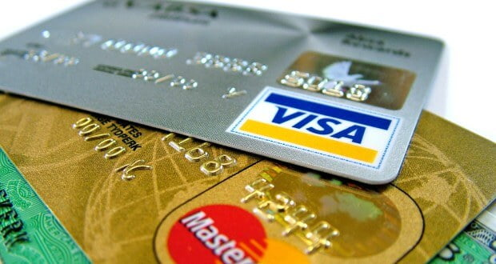

Get Your Credit Card Questions Answered Here?
Credit cards are great for many reasons. They can be used, instead of cash to purchase things. They can also be used to build an individuals credit score. There are also some bad qualities that are attributed to credit cards as well, such as identity theft and debt, when they fall into the wrong hands or are used incorrectly. You can learn how to use your credit card the right way with the tips in the following article.
Pay your minimum payment on time each month, to avoid more fees. If you can afford to, pay more than the minimum payment so that you can reduce the interest fees. Just be sure to pay the minimum amount before the due date. cvv dumps fullz
Every time you decide to apply for a new credit card, your credit report is checked and an "inquiry" is made. This stays on your credit report for up to two years and too many inquiries, brings your credit score down. Therefore, before you start wildly applying for different cards, research the market first and choose a few select options.
It is good practice to check your credit card transactions with your online account to make sure they match up correctly. You do not want to be charged for something you didn't buy. This is also a great way to check for identity theft or if your card is being used without your knowledge.
It goes without saying, perhaps, but always pay your credit cards on time. To be able to follow this simple rule, do not charge more than you afford to pay in cash. Credit card debt can quickly balloon out of control, especially, if the card carries a high interest rate. Otherwise, you will find that you cannot follow the simple rule of paying on time.
A lot of people don't get credit cards so it looks like they have no debt. It's important to have, at the very least, one card, so you are able to build your credit. When you use it, make sure to completely repay it monthly. If you do not have a history of credit usage, your credit score will actually be lower and potential lenders will not have any way to see if you can handle credit.

Use a credit card that offers rewards. Not every credit card company offers rewards, so you need to choose wisely. Reward points can be earned on every purchase, or for making purchases in certain categories. There are many different rewards including air miles, cash back or merchandise. Be wary though because some of these cards charge a fee.
It is a good rule of thumb to have two major credit cards, long-standing, and with low balances reflected on your credit report. You do not want to have a wallet full of credit cards, no matter how good you may be keeping track of everything. While you may be handling yourself well, too many credit cards equals a lower credit score.
If you can't pay your credit card balance in full each month, be sure to make at least double the minimum payment until it is paid off. Paying only the minimum will keep you trapped in escalating interest payments for years. Doubling down on the minimum will help to ensure you get out from the debt as soon as possible. Most importantly, stop using your credit cards for anything but emergencies until the existing debt is paid off.
Transferring a credit card balance from a high interest credit card to a card where the rate is less, can save you money every month. Credit card companies offer special introductory rates to attract new business to their credit cards. If you take advantage of one of these offers, make sure that you understand the amount of time that the introductory rate offer lasts.
After you have cancelled an account, completely destroy any associated cards. It is safest to destroy it because otherwise, it could possibly end up in the wrong hands and be used to open the account and resume spending.
Make sure that you are aware of your available balance on your card and that you do not try to make purchases that end up getting declined. Many credit card companies see this as a bad things and they will be hesitant to raise your card limit if you ask them too later. cvv and dumps
Be careful what secured credit card that you choose. The company might offer certain perks, but the whole program has to be headed in the right direction. If it is not tailored to get your credit on track, then what you will see is yourself stuck with yet another harmful account, and your credit score going down the tubes.
Now that you see the good and bad sides of credit cards, you can prevent the bad things from happening. Using the tips you have learned here, you can use your credit card to buy items and build your credit score without being in debt or suffering from identity theft at the hands of a crook.